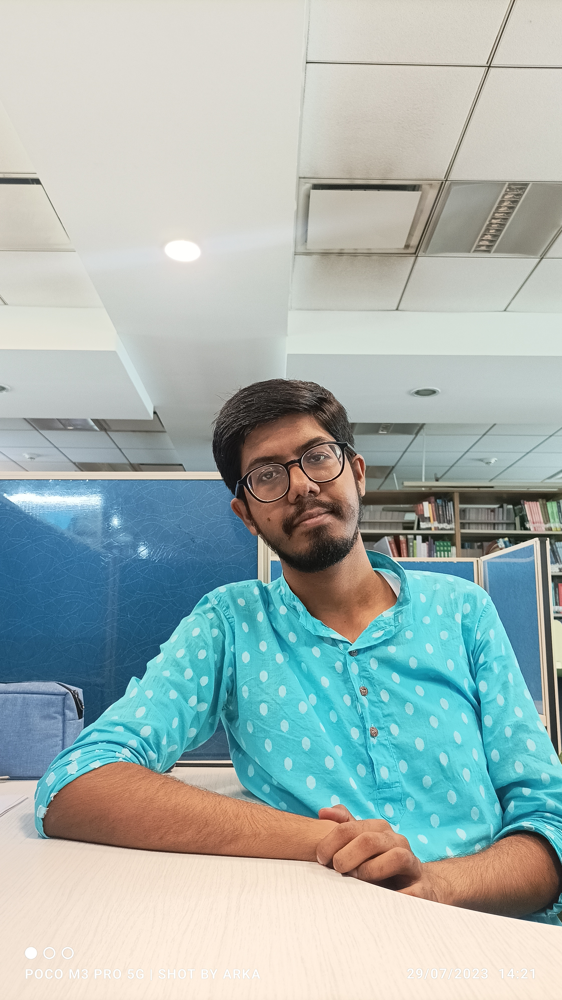

About Me
Welcome To My Profile!
I am a PhD student(3rd Year) from Shiv Nadar University.
I have completed my B.Sc. in Mathematics (Minor in Physics and Chemistry) from Ramakrishna Mission Residential College , Narendrapur (2017-2020)
I have completed my M.Sc. in Economics from Indian Institute of Technology Roorkee (2020-2022)
My current research interests lie in Microeconomic Theory and currently working on "Strategic Experimentation.